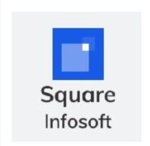
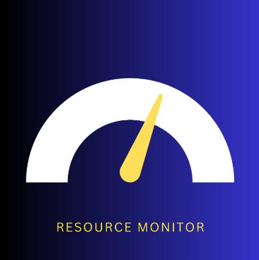
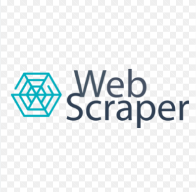

Hello , My Name is Dhruv Patel
a passionate and skilled Computer Science engineer in field of web development, data science, and machine learning. I specialize in building dynamic websites, crafting intelligent data-driven solutions, and developing scalable applications. From intuitive UI/UX designs to predictive analytics and AI-powered systems, I love transforming ideas into impactful digital experiences.
More About Me Download CV Hire MeAbout me
I'm Dhruv Patel
a passionate and results-driven Computer Science professional currently in the final year of my master's at the New Jersey Institute of Technology, maintaining a strong GPA of 3.9. With a solid foundation in software development, data science, and artificial intelligence and machine learning , I have honed my expertise in various programming languages, machine learning models, and full-stack development. During my academic and professional journey, I have worked on diverse projects ranging from real-time data visualization dashboards to AI-powered predictive models. As a Data Science Intern at Enlighten Infosystems, I conducted tailored exploratory data analysis (EDA) on large datasets, optimized dashboard load times by 33%, and developed machine learning models like BERT and XGBoost, achieving 85% accuracy in sales trend predictions. My experience extends to mobile application development, where I engineered an iOS To-Do app using Swift and UIKit and designed an intuitive UI for a meditation app using Flutter, leading to increased user engagement and retention. Beyond my technical abilities, I am a strategic thinker with strong problem-solving skills. My ability to collaborate across teams has led to impactful improvements in UI/UX, app performance, and business intelligence solutions. I thrive on leveraging data-driven insights to build innovative applications that enhance user experiences and optimize business operations. With a strong academic background, hands-on experience, and a passion for innovation, I am eager to contribute to cutting-edge projects that push the boundaries of technology and drive meaningful impact.
birthday: 07 june 2001
Age: 23
gmail: dhruvpatel07062017@gmail.com
Contact: 7327831989
Degree: Masters in Computer Science
City: Newark
State: New Jersey
CSS
jS
HTML
Python
C
C++
Dart
Swift
PhP
R
Hadoop
MySql
Flask
Education
2024-2025
Masters in Computer Science
I am currently in the final year of my master's degree in field of Computer Sciecne, maintaining a strong GPA of 3.9. This journey has deepened my expertise in advanced concepts while refining my problem-solving and analytical skills. Through hands-on projects and research, I have further honed my ability to develop innovative solutions, preparing me for impactful contributions in the field.
Relevant coursework include:- Artificial Intelligence, Operating Systems, Database Management Systems, Data Analytics with R, Machine Learning, Data Mining, Web Systems, Big Data, Project Management
2019-2023
Bachelor of Engineering in Computer Science
I earned my Bachelor of Engineering (BE) in field of Computer Sciecne from Gujarat Technological University, achieving a CGPA of 9.1. Throughout my studies, I developed a strong foundation in engineering principles, problem-solving, and analytical thinking.My academic journey was marked by a keen interest in technology, innovation, and practical applications, which have driven my passion for building impactful solutions.
Relevant coursework include:-Python for Data Science, Data Analytics and Visualization, Design and Analysis of Algorithm, Cloud Computing, Data Structure and Algorithm, Computer Networks
Experience
Feb 2023- May 2023
Enlighten Infosystems
(Data Science Intern)
I conducted tailored exploratory data analysis (EDA) on a dataset of over 10,000 yearly sales entries, identifying key business patterns and optimizing strategies, which led to a 33% improvement in dashboard load time (a reduction of 780 marks). Additionally, I developed and fine-tuned over five machine learning models, including BERT and XGBoost, to predict quarterly sales trends with 85% accuracy, reducing prediction errors by 25%. I also revamped a Flask-based web application, integrating machine learning algorithms and interactive Python projects, which resulted in a 40% increase in user engagement and attracted over 300 monthly users.
june 2022- july 2022
Square Infosoft
(Flutter Intern)
I developed an intuitive user interface for a meditation app using Dart, significantly enhancing the user experience by improving navigation speed by 25% and reducing the number of clicks needed to access key features by 40%. Collaborating with cross-functional teams, I ensured UI/UX alignment with strategic goals, which led to a 15% increase in user retention following stakeholder feedback and a 20% boost in average session length. Additionally, through rigorous testing and optimization, I reduced app load time from 5 seconds to 4 seconds, achieving a 20% performance enhancement.
june 2022- july 2022
Elsner Technologies
(Swift Intern)
I engineered a robust iOS To-Do application using Swift and UIKit, designing a streamlined user interface that reduced the steps required for task management by 50%. By architecting key functionalities such as task creation, reminders, and categorization, I optimized task completion rates by 60%. Additionally, performance enhancements led to a smoother user experience, increasing user satisfaction from 14% to 40%, while active weekly users grew from 7 to 20 out of a total of 50 users.
PROJECTS
My Last projects :
Resource Montoring Web Application
Technologies Used: React, MongoDB, Python, Real-Time Data Processing, Data Visualization
I developed a real-time visualization dashboard using React that provides insightful monitoring of critical system metrics, including CPU usage, network traffic, and disk performance. The dashboard integrates with MongoDB and Python-based backend services to process and display real-time data using interactive graphs and charts. By enhancing system visibility, the application significantly improved operational efficiency by 20%, helping administrators detect and resolve performance issues proactively across various environments. This tool is instrumental for IT teams, enabling them to optimize system health and prevent potential failures through data-driven decision-making.
Web Scraping Automation Pipeline
Technologies Used: R, httr, Python
I developed an automated web scraping pipeline to extract and structure data from multiple websites, optimizing large-scale data collection and processing. Utilizing R libraries such as rvest and httr, along with Python-based parsing tools, I built a robust system that handles dynamic elements, paginated content, and structured data extraction. The pipeline achieved 95% accuracy, reducing manual effort by 80% while optimizing script efficiency by 40%. This solution is particularly useful for market research, sentiment analysis, financial data collection, and automated news aggregation, offering businesses a scalable and reliable way to gather actionable insights.
Health Department Database Application
Technologies Used: Flask, Python, MySQL
I designed and developed a comprehensive hospital management system that streamlines patient, doctor, appointment, and staff management. The application is powered by a Flask-based backend with a MySQL database, ensuring efficient scheduling, automated record-keeping, and seamless data retrieval. By implementing advanced database queries and optimized workflows, the system reduced administrative overhead by 30% and minimized data entry errors by 20%. The platform offers an intuitive interface, allowing hospital administrators to manage appointments, track patient histories, and facilitate better communication between medical staff, ultimately improving overall patient care and hospital efficiency.
Online Hate Speech Detection System
Technologies Used: Python, NLP, Deep Learning, Text Preprocessing, Feature Engineering
I engineered an AI-powered hate speech detection system leveraging Natural Language Processing (NLP) and Deep Learning models to analyze and classify text-based content. By applying advanced text preprocessing techniques such as tokenization, lemmatization, and sentiment analysis, I significantly reduced noise in textual data, improving model performance. The system achieved an F1 score of 0.92 on a diverse dataset, outperforming traditional models. Additionally, noise reduction techniques improved accuracy by 15%, making the classifier highly effective in detecting harmful content. This project has real-world applications in social media monitoring, content moderation, and online community safety, ensuring digital platforms remain inclusive and secure.
ChatBot Song Recommender System
Technologies Used: Python, NLP, Data Preprocessing, Collaborative Filtering, Content-Based Filtering, Flask
I engineered an AI-powered hate speech detection system leveraging Natural Language Processing (NLP) and Deep Learning models to analyze and classify text-based content. By applying advanced text preprocessing techniques such as tokenization, lemmatization, and sentiment analysis, I significantly reduced noise in textual data, improving model performance. The system achieved an F1 score of 0.92 on a diverse dataset, outperforming traditional models. Additionally, noise reduction techniques improved accuracy by 15%, making the classifier highly effective in detecting harmful content. This project has real-world applications in social media monitoring, content moderation, and online community safety, ensuring digital platforms remain inclusive and secure.
Awards/Certfications/Workshops
Awards
Best Data Science intern award at Enlighten Infosystems
Certfications
Google Data Analystics(2024)
Data Analysis by Microsoft(2024)
Workshops list
- 3D Printing
- Algorithm Unlock
- 5G System Protocol & Architecture
Contact